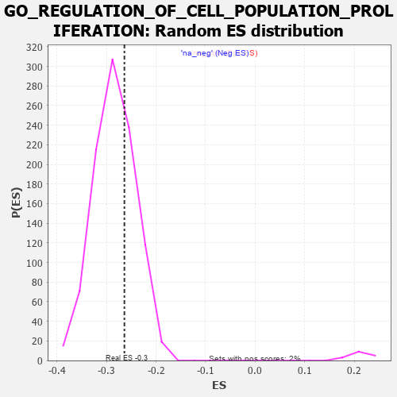

| | | Dataset | 7d |
| Phenotype | NoPhenotypeAvailable |
| Upregulated in class | na_neg |
| GeneSet | GO_REGULATION_OF_CELL_POPULATION_PROLIFERATION |
| Enrichment Score (ES) | -0.26390663 |
| Normalized Enrichment Score (NES) | -0.9288443 |
| Nominal p-value | 0.68972534 |
| FDR q-value | 0.9291087 |
| FWER p-Value | 1.0 |
Table: GSEA Results Summary
 Fig 1: Enrichment plot: GO_REGULATION_OF_CELL_POPULATION_PROLIFERATION
Fig 1: Enrichment plot: GO_REGULATION_OF_CELL_POPULATION_PROLIFERATION
Profile of the Running ES Score & Positions of GeneSet Members on the Rank Ordered List
| PROBE | GENE SYMBOL | GENE_TITLE | RANK IN GENE LIST | RANK METRIC SCORE | RUNNING ES | CORE ENRICHMENT | | 1 | SIX2 | | | 40 | 3.152 | 0.0140 | No |
| 2 | TGFB3 | | | 49 | 2.654 | 0.0291 | No |
| 3 | RAC2 | | | 60 | 2.442 | 0.0426 | No |
| 4 | IRS1 | | | 98 | 1.659 | 0.0479 | No |
| 5 | DISP3 | | | 110 | 1.525 | 0.0557 | No |
| 6 | EGR4 | | | 118 | 1.439 | 0.0636 | No |
| 7 | FOXF1 | | | 176 | 1.136 | 0.0630 | No |
| 8 | SPDYA | | | 211 | 1.026 | 0.0648 | No |
| 9 | CIP2A | | | 246 | 0.945 | 0.0661 | No |
| 10 | INSM1 | | | 250 | 0.939 | 0.0714 | No |
| 11 | LBX1 | | | 254 | 0.929 | 0.0767 | No |
| 12 | TBX20 | | | 267 | 0.880 | 0.0805 | No |
| 13 | SHOX2 | | | 288 | 0.842 | 0.0830 | No |
| 14 | KLF11 | | | 318 | 0.788 | 0.0840 | No |
| 15 | ARX | | | 322 | 0.782 | 0.0884 | No |
| 16 | DLL1 | | | 337 | 0.760 | 0.0912 | No |
| 17 | CNOT7 | | | 348 | 0.750 | 0.0944 | No |
| 18 | ARNT | | | 357 | 0.741 | 0.0979 | No |
| 19 | AXIN2 | | | 383 | 0.713 | 0.0989 | No |
| 20 | BAX | | | 387 | 0.711 | 0.1029 | No |
| 21 | CNOT6 | | | 462 | 0.655 | 0.0972 | No |
| 22 | CDC20 | | | 480 | 0.644 | 0.0989 | No |
| 23 | MYOD1 | | | 504 | 0.628 | 0.0997 | No |
| 24 | PKN1 | | | 535 | 0.619 | 0.0995 | No |
| 25 | SRF | | | 542 | 0.615 | 0.1025 | No |
| 26 | CCNB1 | | | 581 | 0.601 | 0.1012 | No |
| 27 | PITX3 | | | 594 | 0.596 | 0.1032 | No |
| 28 | GLMN | | | 632 | 0.583 | 0.1019 | No |
| 29 | HES5 | | | 661 | 0.571 | 0.1018 | No |
| 30 | XRCC6 | | | 694 | 0.560 | 0.1010 | No |
| 31 | CDC6 | | | 709 | 0.557 | 0.1025 | No |
| 32 | VASH1 | | | 712 | 0.556 | 0.1057 | No |
| 33 | ID1 | | | 719 | 0.555 | 0.1082 | No |
| 34 | HMGB2 | | | 892 | 0.507 | 0.0888 | No |
| 35 | STOX1 | | | 905 | 0.506 | 0.0903 | No |
| 36 | WDR6 | | | 916 | 0.504 | 0.0921 | No |
| 37 | PDCD4 | | | 941 | 0.497 | 0.0920 | No |
| 38 | CCND2 | | | 949 | 0.496 | 0.0941 | No |
| 39 | WDR48 | | | 975 | 0.489 | 0.0938 | No |
| 40 | MEN1 | | | 1003 | 0.483 | 0.0932 | No |
| 41 | MED31 | | | 1017 | 0.480 | 0.0944 | No |
| 42 | AKT1 | | | 1040 | 0.476 | 0.0944 | No |
| 43 | YAP1 | | | 1041 | 0.475 | 0.0973 | No |
| 44 | MEF2C | | | 1054 | 0.473 | 0.0986 | No |
| 45 | CDK10 | | | 1092 | 0.465 | 0.0966 | No |
| 46 | SRC | | | 1128 | 0.459 | 0.0948 | No |
| 47 | NCK2 | | | 1131 | 0.458 | 0.0974 | No |
| 48 | EMX1 | | | 1143 | 0.455 | 0.0987 | No |
| 49 | MTSS1 | | | 1149 | 0.454 | 0.1008 | No |
| 50 | TFDP1 | | | 1180 | 0.450 | 0.0996 | No |
| 51 | KAT7 | | | 1240 | 0.440 | 0.0946 | No |
| 52 | CDC73 | | | 1265 | 0.436 | 0.0941 | No |
| 53 | EAPP | | | 1344 | 0.421 | 0.0865 | No |
| 54 | SSBP3 | | | 1396 | 0.411 | 0.0823 | No |
| 55 | CARM1 | | | 1413 | 0.408 | 0.0827 | No |
| 56 | RBM10 | | | 1430 | 0.404 | 0.0830 | No |
| 57 | PDS5B | | | 1432 | 0.403 | 0.0854 | No |
| 58 | DACH1 | | | 1471 | 0.395 | 0.0828 | No |
| 59 | WDR13 | | | 1475 | 0.394 | 0.0848 | No |
| 60 | TIMP2 | | | 1478 | 0.394 | 0.0869 | No |
| 61 | E2F4 | | | 1501 | 0.390 | 0.0864 | No |
| 62 | SOS1 | | | 1547 | 0.384 | 0.0829 | No |
| 63 | CDK4 | | | 1626 | 0.370 | 0.0749 | No |
| 64 | DERL2 | | | 1632 | 0.368 | 0.0765 | No |
| 65 | MEIS1 | | | 1723 | 0.351 | 0.0669 | No |
| 66 | WAPL | | | 1758 | 0.344 | 0.0645 | No |
| 67 | LRP5 | | | 1769 | 0.342 | 0.0653 | No |
| 68 | STRAP | | | 1793 | 0.339 | 0.0643 | No |
| 69 | RNF10 | | | 1833 | 0.331 | 0.0613 | No |
| 70 | TCF7 | | | 1848 | 0.328 | 0.0614 | No |
| 71 | SMAD4 | | | 1860 | 0.326 | 0.0620 | No |
| 72 | NUP62 | | | 1871 | 0.324 | 0.0626 | No |
| 73 | UTP20 | | | 1882 | 0.322 | 0.0633 | No |
| 74 | CUL3 | | | 1893 | 0.321 | 0.0639 | No |
| 75 | FOXO4 | | | 2004 | 0.304 | 0.0514 | No |
| 76 | RAF1 | | | 2011 | 0.303 | 0.0525 | No |
| 77 | PEX2 | | | 2056 | 0.298 | 0.0485 | No |
| 78 | MEIS2 | | | 2063 | 0.296 | 0.0495 | No |
| 79 | BMP7 | | | 2107 | 0.290 | 0.0457 | No |
| 80 | ATOH8 | | | 2145 | 0.285 | 0.0426 | No |
| 81 | DDR1 | | | 2176 | 0.280 | 0.0403 | No |
| 82 | UBE2A | | | 2183 | 0.278 | 0.0412 | No |
| 83 | SYK | | | 2186 | 0.278 | 0.0427 | No |
| 84 | MEIS3 | | | 2188 | 0.278 | 0.0442 | No |
| 85 | ATAD5 | | | 2197 | 0.277 | 0.0449 | No |
| 86 | OTP | | | 2209 | 0.275 | 0.0451 | No |
| 87 | CDK2 | | | 2226 | 0.272 | 0.0447 | No |
| 88 | CREB1 | | | 2243 | 0.269 | 0.0442 | No |
| 89 | EAF2 | | | 2278 | 0.263 | 0.0414 | No |
| 90 | MAP11 | | | 2286 | 0.263 | 0.0421 | No |
| 91 | REST | | | 2308 | 0.259 | 0.0409 | No |
| 92 | MED25 | | | 2320 | 0.257 | 0.0410 | No |
| 93 | MIF | | | 2357 | 0.252 | 0.0378 | No |
| 94 | HIPK2 | | | 2389 | 0.247 | 0.0353 | No |
| 95 | MTA3 | | | 2443 | 0.237 | 0.0298 | No |
| 96 | KDM1A | | | 2447 | 0.237 | 0.0308 | No |
| 97 | KAT2B | | | 2502 | 0.226 | 0.0251 | No |
| 98 | EMC10 | | | 2607 | 0.211 | 0.0128 | No |
| 99 | VAV3 | | | 2614 | 0.210 | 0.0133 | No |
| 100 | ROGDI | | | 2633 | 0.207 | 0.0122 | No |
| 101 | NOP2 | | | 2648 | 0.206 | 0.0117 | No |
| 102 | MITF | | | 2659 | 0.205 | 0.0116 | No |
| 103 | ARID2 | | | 2664 | 0.204 | 0.0123 | No |
| 104 | PHB2 | | | 2712 | 0.197 | 0.0074 | No |
| 105 | FER | | | 2803 | 0.183 | -0.0033 | No |
| 106 | BRK1 | | | 2805 | 0.183 | -0.0023 | No |
| 107 | PHF14 | | | 2838 | 0.178 | -0.0054 | No |
| 108 | NR2E1 | | | 2844 | 0.177 | -0.0050 | No |
| 109 | PDCD5 | | | 2885 | 0.169 | -0.0092 | No |
| 110 | FGFR2 | | | 2895 | 0.167 | -0.0094 | No |
| 111 | RBM5 | | | 2910 | 0.164 | -0.0102 | No |
| 112 | AGGF1 | | | 2911 | 0.164 | -0.0092 | No |
| 113 | CDK13 | | | 2944 | 0.158 | -0.0124 | No |
| 114 | LIFR | | | 2948 | 0.158 | -0.0119 | No |
| 115 | BTK | | | 2958 | 0.156 | -0.0121 | No |
| 116 | GID8 | | | 2978 | 0.153 | -0.0136 | No |
| 117 | BRD7 | | | 3018 | 0.147 | -0.0179 | No |
| 118 | COX17 | | | 3019 | 0.147 | -0.0170 | No |
| 119 | BRCA2 | | | 3024 | 0.146 | -0.0166 | No |
| 120 | LEF1 | | | 3037 | 0.144 | -0.0173 | No |
| 121 | UFL1 | | | 3041 | 0.144 | -0.0168 | No |
| 122 | BIRC6 | | | 3047 | 0.143 | -0.0166 | No |
| 123 | HDAC1 | | | 3086 | 0.138 | -0.0207 | No |
| 124 | CUL4A | | | 3097 | 0.137 | -0.0212 | No |
| 125 | RREB1 | | | 3099 | 0.137 | -0.0205 | No |
| 126 | AIMP1 | | | 3105 | 0.136 | -0.0203 | No |
| 127 | GPX1 | | | 3109 | 0.135 | -0.0199 | No |
| 128 | SFRP5 | | | 3154 | 0.129 | -0.0248 | No |
| 129 | GCNT2 | | | 3162 | 0.128 | -0.0250 | No |
| 130 | PAX6 | | | 3170 | 0.127 | -0.0251 | No |
| 131 | AHR | | | 3175 | 0.126 | -0.0249 | No |
| 132 | FZR1 | | | 3205 | 0.122 | -0.0279 | No |
| 133 | PRDX4 | | | 3214 | 0.120 | -0.0283 | No |
| 134 | SMAD3 | | | 3303 | 0.105 | -0.0391 | No |
| 135 | CFDP1 | | | 3332 | 0.099 | -0.0422 | No |
| 136 | SMAD1 | | | 3337 | 0.099 | -0.0421 | No |
| 137 | SMAD7 | | | 3369 | 0.093 | -0.0456 | No |
| 138 | MED1 | | | 3405 | 0.089 | -0.0496 | No |
| 139 | PTPRK | | | 3454 | 0.084 | -0.0554 | No |
| 140 | HGS | | | 3476 | 0.080 | -0.0577 | No |
| 141 | GLI1 | | | 3489 | 0.079 | -0.0588 | No |
| 142 | FES | | | 3501 | 0.077 | -0.0597 | No |
| 143 | NELL1 | | | 3538 | 0.070 | -0.0640 | No |
| 144 | CHERP | | | 3587 | 0.062 | -0.0699 | No |
| 145 | TNS2 | | | 3588 | 0.062 | -0.0695 | No |
| 146 | MAPK3 | | | 3589 | 0.062 | -0.0692 | No |
| 147 | NOLC1 | | | 3623 | 0.056 | -0.0731 | No |
| 148 | DHX9 | | | 3693 | 0.044 | -0.0819 | No |
| 149 | NF1 | | | 3713 | 0.040 | -0.0841 | No |
| 150 | HSF1 | | | 3718 | 0.039 | -0.0844 | No |
| 151 | CNBP | | | 3728 | 0.037 | -0.0854 | No |
| 152 | CCAR1 | | | 3737 | 0.036 | -0.0862 | No |
| 153 | HTR1B | | | 3745 | 0.035 | -0.0869 | No |
| 154 | SKI | | | 3762 | 0.032 | -0.0888 | No |
| 155 | PRC1 | | | 3841 | 0.021 | -0.0989 | No |
| 156 | JAG2 | | | 3903 | 0.010 | -0.1068 | No |
| 157 | IGF1R | | | 3970 | -0.002 | -0.1154 | No |
| 158 | EYA1 | | | 3987 | -0.006 | -0.1175 | No |
| 159 | SYF2 | | | 4008 | -0.009 | -0.1200 | No |
| 160 | DDAH1 | | | 4056 | -0.016 | -0.1261 | No |
| 161 | TAL1 | | | 4064 | -0.018 | -0.1269 | No |
| 162 | SFRP2 | | | 4065 | -0.018 | -0.1268 | No |
| 163 | CSF1 | | | 4074 | -0.019 | -0.1277 | No |
| 164 | DDX20 | | | 4083 | -0.021 | -0.1286 | No |
| 165 | WNT2 | | | 4084 | -0.021 | -0.1285 | No |
| 166 | MTOR | | | 4114 | -0.025 | -0.1321 | No |
| 167 | ABL1 | | | 4125 | -0.027 | -0.1333 | No |
| 168 | HNF4A | | | 4157 | -0.034 | -0.1371 | No |
| 169 | PDX1 | | | 4179 | -0.038 | -0.1397 | No |
| 170 | TIMP1 | | | 4209 | -0.043 | -0.1432 | No |
| 171 | RPTOR | | | 4252 | -0.050 | -0.1484 | No |
| 172 | WNT11 | | | 4282 | -0.056 | -0.1518 | No |
| 173 | TBX2 | | | 4303 | -0.060 | -0.1541 | No |
| 174 | STRN | | | 4307 | -0.060 | -0.1541 | No |
| 175 | ROMO1 | | | 4320 | -0.063 | -0.1553 | No |
| 176 | TSHR | | | 4322 | -0.063 | -0.1550 | No |
| 177 | CTBP1 | | | 4323 | -0.064 | -0.1546 | No |
| 178 | CD109 | | | 4325 | -0.064 | -0.1544 | No |
| 179 | LHX5 | | | 4332 | -0.066 | -0.1548 | No |
| 180 | MYDGF | | | 4429 | -0.081 | -0.1668 | No |
| 181 | LAMC1 | | | 4445 | -0.084 | -0.1683 | No |
| 182 | NDRG1 | | | 4456 | -0.085 | -0.1691 | No |
| 183 | LRRK2 | | | 4467 | -0.087 | -0.1698 | No |
| 184 | ILK | | | 4510 | -0.096 | -0.1748 | No |
| 185 | PINX1 | | | 4515 | -0.097 | -0.1747 | No |
| 186 | NTRK2 | | | 4543 | -0.104 | -0.1776 | No |
| 187 | APC | | | 4558 | -0.107 | -0.1788 | No |
| 188 | BAG6 | | | 4563 | -0.108 | -0.1786 | No |
| 189 | GATA3 | | | 4614 | -0.120 | -0.1844 | No |
| 190 | DLG5 | | | 4619 | -0.121 | -0.1842 | No |
| 191 | FGFR3 | | | 4656 | -0.129 | -0.1882 | No |
| 192 | NUDT6 | | | 4682 | -0.135 | -0.1906 | No |
| 193 | LHX2 | | | 4716 | -0.143 | -0.1941 | No |
| 194 | CNN1 | | | 4727 | -0.144 | -0.1945 | No |
| 195 | FBLN1 | | | 4748 | -0.149 | -0.1962 | No |
| 196 | PLCG1 | | | 4770 | -0.151 | -0.1980 | No |
| 197 | PDE1A | | | 4773 | -0.152 | -0.1974 | No |
| 198 | PIM1 | | | 4776 | -0.152 | -0.1967 | No |
| 199 | RTN4 | | | 4783 | -0.154 | -0.1965 | No |
| 200 | PIM2 | | | 4789 | -0.155 | -0.1963 | No |
| 201 | SRPK2 | | | 4790 | -0.155 | -0.1953 | No |
| 202 | TERT | | | 4801 | -0.157 | -0.1957 | No |
| 203 | PPM1D | | | 4805 | -0.158 | -0.1951 | No |
| 204 | FBXW7 | | | 4816 | -0.161 | -0.1954 | No |
| 205 | TIPIN | | | 4839 | -0.166 | -0.1973 | No |
| 206 | SGK1 | | | 4852 | -0.168 | -0.1978 | No |
| 207 | DLG1 | | | 4860 | -0.169 | -0.1977 | No |
| 208 | CLU | | | 4889 | -0.174 | -0.2003 | No |
| 209 | SLIT3 | | | 4890 | -0.175 | -0.1993 | No |
| 210 | SUZ12 | | | 4931 | -0.185 | -0.2034 | No |
| 211 | XRCC5 | | | 4946 | -0.187 | -0.2041 | No |
| 212 | PRKDC | | | 4955 | -0.189 | -0.2039 | No |
| 213 | KLF4 | | | 5005 | -0.198 | -0.2091 | No |
| 214 | PURA | | | 5032 | -0.205 | -0.2113 | No |
| 215 | PDPK1 | | | 5043 | -0.207 | -0.2114 | No |
| 216 | ING4 | | | 5084 | -0.221 | -0.2152 | No |
| 217 | DRD2 | | | 5088 | -0.221 | -0.2143 | No |
| 218 | MMP9 | | | 5108 | -0.227 | -0.2154 | No |
| 219 | FLCN | | | 5140 | -0.235 | -0.2180 | No |
| 220 | TBX1 | | | 5166 | -0.241 | -0.2198 | No |
| 221 | SMO | | | 5195 | -0.247 | -0.2220 | No |
| 222 | ATM | | | 5210 | -0.249 | -0.2223 | No |
| 223 | KRIT1 | | | 5248 | -0.257 | -0.2256 | No |
| 224 | FOXJ2 | | | 5249 | -0.257 | -0.2240 | No |
| 225 | PTEN | | | 5262 | -0.261 | -0.2240 | No |
| 226 | CDK1 | | | 5264 | -0.262 | -0.2225 | No |
| 227 | MAGI2 | | | 5295 | -0.269 | -0.2248 | No |
| 228 | CD9 | | | 5319 | -0.277 | -0.2261 | No |
| 229 | TOB2 | | | 5337 | -0.282 | -0.2266 | No |
| 230 | SGK3 | | | 5338 | -0.282 | -0.2249 | No |
| 231 | EPHA1 | | | 5349 | -0.285 | -0.2245 | No |
| 232 | FZD5 | | | 5386 | -0.292 | -0.2274 | No |
| 233 | PRDX3 | | | 5389 | -0.293 | -0.2259 | No |
| 234 | ACER3 | | | 5390 | -0.294 | -0.2241 | No |
| 235 | SSR1 | | | 5391 | -0.294 | -0.2223 | No |
| 236 | SOX8 | | | 5404 | -0.296 | -0.2221 | No |
| 237 | FRK | | | 5451 | -0.307 | -0.2262 | No |
| 238 | VDR | | | 5517 | -0.325 | -0.2328 | No |
| 239 | FGFR1 | | | 5543 | -0.332 | -0.2340 | No |
| 240 | FOLR2 | | | 5563 | -0.336 | -0.2345 | No |
| 241 | SPHK1 | | | 5576 | -0.339 | -0.2340 | No |
| 242 | SMYD2 | | | 5598 | -0.344 | -0.2346 | No |
| 243 | GNL3 | | | 5614 | -0.349 | -0.2345 | No |
| 244 | ROR2 | | | 5626 | -0.353 | -0.2338 | No |
| 245 | ASPM | | | 5637 | -0.358 | -0.2329 | No |
| 246 | TPTE2 | | | 5736 | -0.388 | -0.2433 | No |
| 247 | PDCL3 | | | 5738 | -0.388 | -0.2411 | No |
| 248 | TLR2 | | | 5761 | -0.395 | -0.2416 | No |
| 249 | ADA | | | 5798 | -0.405 | -0.2438 | No |
| 250 | STAT4 | | | 5867 | -0.424 | -0.2502 | No |
| 251 | STK11 | | | 5922 | -0.443 | -0.2545 | No |
| 252 | PRDM1 | | | 5956 | -0.457 | -0.2561 | No |
| 253 | PTPRN | | | 6007 | -0.474 | -0.2597 | No |
| 254 | XBP1 | | | 6011 | -0.475 | -0.2572 | No |
| 255 | NR2E3 | | | 6048 | -0.488 | -0.2590 | No |
| 256 | JAG1 | | | 6060 | -0.494 | -0.2574 | No |
| 257 | CALR | | | 6077 | -0.499 | -0.2564 | No |
| 258 | IFT80 | | | 6135 | -0.515 | -0.2608 | Yes |
| 259 | STK4 | | | 6145 | -0.518 | -0.2588 | Yes |
| 260 | FEZF2 | | | 6150 | -0.519 | -0.2562 | Yes |
| 261 | EGR1 | | | 6165 | -0.527 | -0.2548 | Yes |
| 262 | INSR | | | 6204 | -0.538 | -0.2565 | Yes |
| 263 | SMAD2 | | | 6216 | -0.541 | -0.2546 | Yes |
| 264 | TPM1 | | | 6226 | -0.545 | -0.2525 | Yes |
| 265 | RGN | | | 6233 | -0.547 | -0.2499 | Yes |
| 266 | CDC42 | | | 6236 | -0.548 | -0.2469 | Yes |
| 267 | TFAP4 | | | 6254 | -0.556 | -0.2457 | Yes |
| 268 | IFT52 | | | 6280 | -0.566 | -0.2455 | Yes |
| 269 | IFT57 | | | 6307 | -0.579 | -0.2454 | Yes |
| 270 | CDON | | | 6378 | -0.607 | -0.2509 | Yes |
| 271 | TRPM4 | | | 6390 | -0.612 | -0.2486 | Yes |
| 272 | CSK | | | 6428 | -0.630 | -0.2496 | Yes |
| 273 | CIAO1 | | | 6445 | -0.638 | -0.2478 | Yes |
| 274 | SOX2 | | | 6477 | -0.652 | -0.2479 | Yes |
| 275 | DYSF | | | 6481 | -0.654 | -0.2443 | Yes |
| 276 | PTBP2 | | | 6499 | -0.661 | -0.2425 | Yes |
| 277 | DPP4 | | | 6501 | -0.663 | -0.2386 | Yes |
| 278 | ACE | | | 6526 | -0.674 | -0.2376 | Yes |
| 279 | DDR2 | | | 6542 | -0.681 | -0.2355 | Yes |
| 280 | RERG | | | 6551 | -0.684 | -0.2323 | Yes |
| 281 | ROBO1 | | | 6577 | -0.699 | -0.2314 | Yes |
| 282 | RNF41 | | | 6588 | -0.703 | -0.2284 | Yes |
| 283 | MKS1 | | | 6607 | -0.715 | -0.2264 | Yes |
| 284 | WWTR1 | | | 6631 | -0.729 | -0.2250 | Yes |
| 285 | VASH2 | | | 6680 | -0.752 | -0.2267 | Yes |
| 286 | SAT1 | | | 6688 | -0.756 | -0.2230 | Yes |
| 287 | CERS2 | | | 6689 | -0.756 | -0.2184 | Yes |
| 288 | PAK1 | | | 6691 | -0.757 | -0.2139 | Yes |
| 289 | EGFR | | | 6708 | -0.765 | -0.2113 | Yes |
| 290 | PTH1R | | | 6845 | -0.839 | -0.2240 | Yes |
| 291 | GHSR | | | 6937 | -0.894 | -0.2305 | Yes |
| 292 | DOT1L | | | 6939 | -0.897 | -0.2252 | Yes |
| 293 | CCR2 | | | 7003 | -0.939 | -0.2277 | Yes |
| 294 | NR4A1 | | | 7022 | -0.951 | -0.2243 | Yes |
| 295 | RBBP4 | | | 7123 | -1.010 | -0.2312 | Yes |
| 296 | AR | | | 7169 | -1.046 | -0.2307 | Yes |
| 297 | PTPRJ | | | 7180 | -1.054 | -0.2256 | Yes |
| 298 | TSPO | | | 7194 | -1.065 | -0.2208 | Yes |
| 299 | OVOL2 | | | 7197 | -1.068 | -0.2146 | Yes |
| 300 | MFN2 | | | 7208 | -1.081 | -0.2093 | Yes |
| 301 | IFT74 | | | 7211 | -1.085 | -0.2030 | Yes |
| 302 | LAMB1 | | | 7220 | -1.094 | -0.1974 | Yes |
| 303 | PLPP1 | | | 7262 | -1.135 | -0.1958 | Yes |
| 304 | CIB1 | | | 7280 | -1.152 | -0.1910 | Yes |
| 305 | MSX2 | | | 7299 | -1.171 | -0.1862 | Yes |
| 306 | GRN | | | 7319 | -1.194 | -0.1815 | Yes |
| 307 | OVOL1 | | | 7341 | -1.214 | -0.1768 | Yes |
| 308 | PLAC8 | | | 7355 | -1.223 | -0.1711 | Yes |
| 309 | DLEC1 | | | 7390 | -1.255 | -0.1679 | Yes |
| 310 | CELA1 | | | 7399 | -1.265 | -0.1612 | Yes |
| 311 | KLF5 | | | 7429 | -1.304 | -0.1571 | Yes |
| 312 | LHX1 | | | 7431 | -1.305 | -0.1493 | Yes |
| 313 | CD22 | | | 7534 | -1.449 | -0.1538 | Yes |
| 314 | GAS8 | | | 7540 | -1.455 | -0.1456 | Yes |
| 315 | NLRC3 | | | 7574 | -1.515 | -0.1407 | Yes |
| 316 | PDCD6 | | | 7630 | -1.615 | -0.1381 | Yes |
| 317 | BOK | | | 7715 | -1.817 | -0.1380 | Yes |
| 318 | CASP3 | | | 7747 | -1.902 | -0.1305 | Yes |
| 319 | ST18 | | | 7780 | -2.007 | -0.1225 | Yes |
| 320 | TRAF6 | | | 7818 | -2.157 | -0.1142 | Yes |
| 321 | PKD2 | | | 7822 | -2.167 | -0.1014 | Yes |
| 322 | SP1 | | | 7840 | -2.321 | -0.0895 | Yes |
| 323 | DLX5 | | | 7845 | -2.378 | -0.0755 | Yes |
| 324 | MMP2 | | | 7875 | -2.574 | -0.0636 | Yes |
| 325 | FYN | | | 7881 | -2.622 | -0.0483 | Yes |
| 326 | CAV3 | | | 7896 | -2.739 | -0.0335 | Yes |
| 327 | ARRB1 | | | 7935 | -3.377 | -0.0179 | Yes |
| 328 | XIAP | | | 7947 | -3.696 | 0.0031 | Yes |
Table: GSEA details [plain text format]

Fig 2: GO_REGULATION_OF_CELL_POPULATION_PROLIFERATION: Random ES distribution
Gene set null distribution of ES for GO_REGULATION_OF_CELL_POPULATION_PROLIFERATION